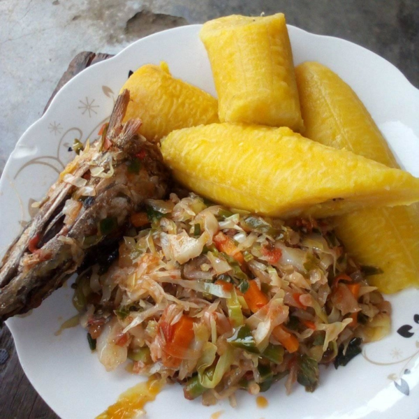

Carbage and Plantain

Description
Carbage and plantain are alocal delicacy that is often very common in the north west region of cameroon,
this is because carbage is mainly grown there. iT can be eaten with many things but its best enjoyed with plantain.
Ingredients
- Plantain
- Carbage fruit
- Meat and or Fish
- Palm oil
- cray fish
- Maggi and salt
- Pepper
- Groundnut(Optional)
Steps
- Plantain is just easily peeled and boiled
- Carbage is sliced into small pieces following patherns
- The carbage is then boiled and the water thrown away.
- oil is then poured in a pot and bleached
- In the case of adding groundnut, it is added to the oil
- All ingredients are added and then allowed to cook to desired temperatures and removed
Back to Homepage